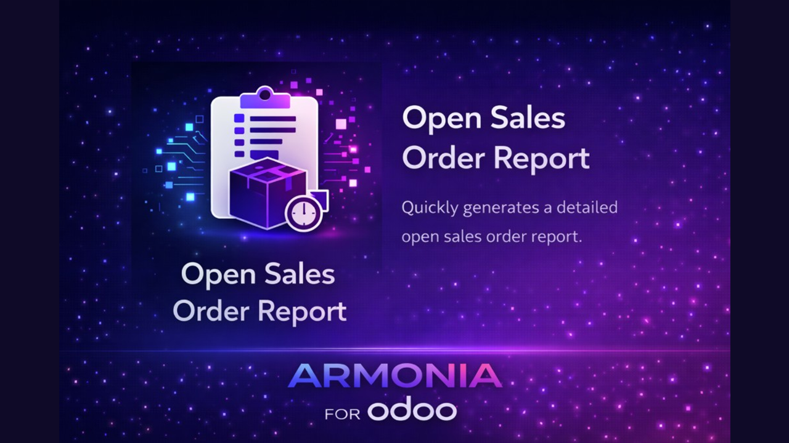
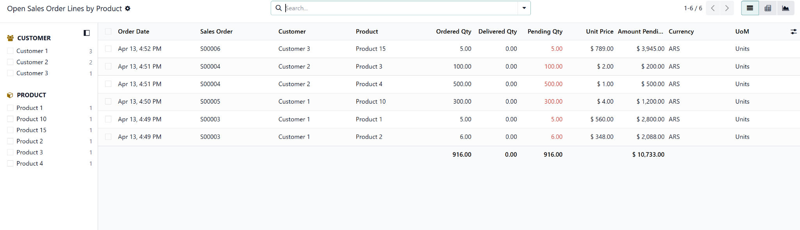
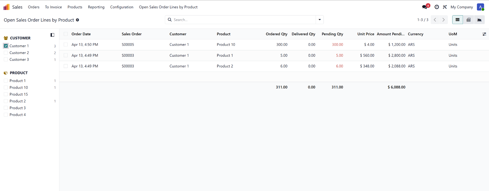
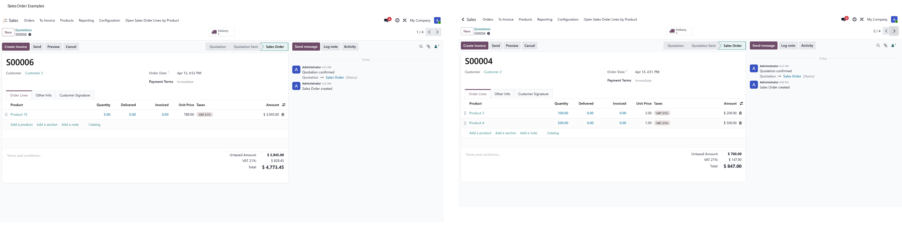

Open Sales Order Report
Fast visibility into pending deliveries from confirmed sales orders.
Odoo 19
Sales
Inventory
Armonia

Why teams use it
Instead of opening order by order, this report centralizes every line that still has quantity to deliver. Operations and sales teams can prioritize fulfillment instantly.
What you see
- Confirmed order lines with pending quantity greater than zero.
- Customer, product, ordered, delivered, and pending quantities.
- Pricing and pending amount for quick commercial impact checks.
- Read-only SQL report for speed and safety.
Screenshots



Technical notes
- No stock moves are created from this screen.
- Excludes down payments, sections/notes, and lines without product.
- Depends on sale_management and stock.